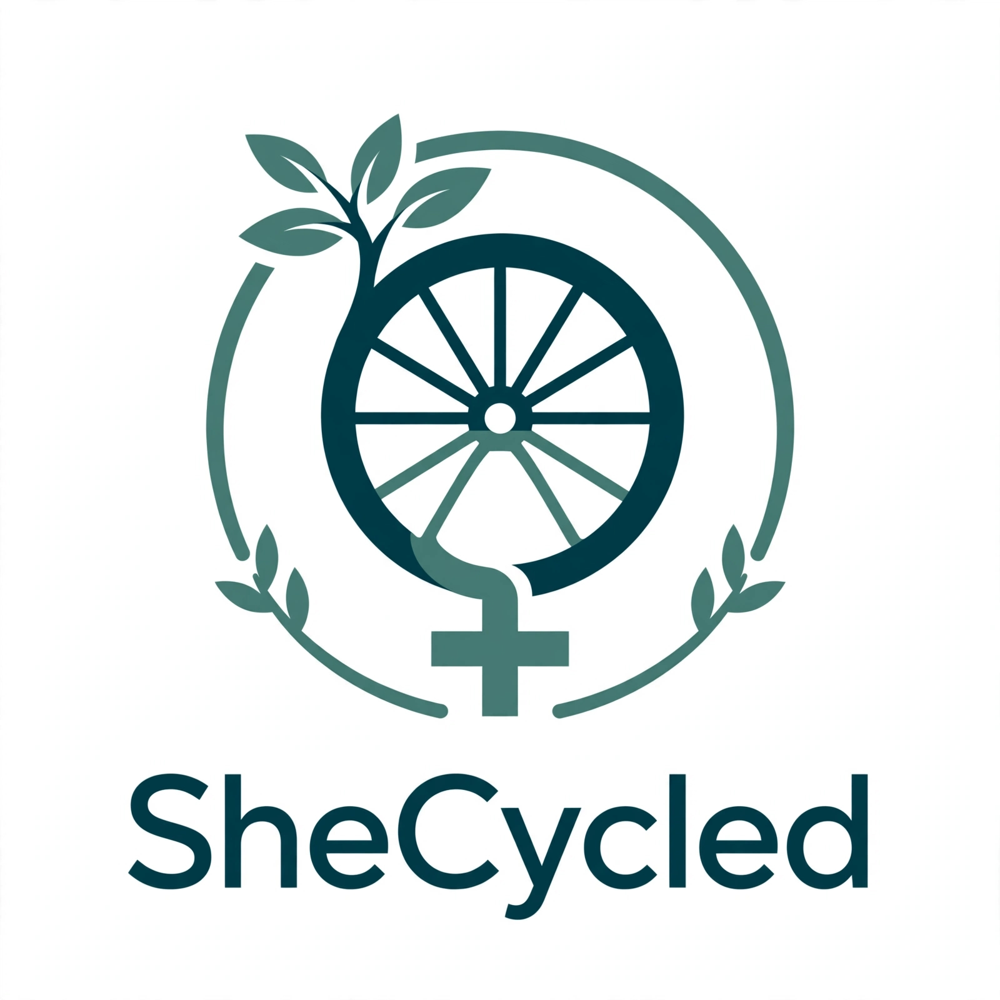

Transforming Waste to Dignity
A circular economy social enterprise that promotes climate education, transforms agricultural waste into biodegradable sanitary pads, advance mentrual health and dignity.
SheCycled is a women-led circular economy social enterprise in Nigeria working at the intersection of climate action, menstrual health, and sustainable innovation.
We transform agricultural waste, particularly discarded banana stems, into biodegradable sanitary pads — creating a more sustainable alternative to conventional menstrual products while addressing period poverty among women and girls, especially those in underserved communities and Internally Displaced Persons (IDP) camps.
Beyond product innovation, we promote climate education through school visits across Plateau and Adamawa States, Nigeria — educating young people about environmental protection, recycling, and responsible waste management.
We have also created economic opportunities for rural farmers by sourcing agricultural waste and for women through sustainable production and distribution.
Our Vision: To ensure that by 2030, every woman and girl in underserved communities across Middle Belt, Nigeria has access to free or affordable menstrual products in schools and workplaces.
Teaching women and girls to ride, repair and own bicycles confidently.
Bicycles help girls get to school faster, safer and stay longer.
Women use bicycles for market access and financial independence.
SheCycled puts women in motion — giving them freedom, safety and voice.
Every bicycle replaces fossil fuel trips — zero-emission mobility.
Making cities inclusive, safe and sustainable with women-led cycling.
Women use bicycles to grow businesses and access markets.